Qu’écrit le médecin sur le certificat, lundi à 07:40 ?
1 / 35Un décès à domicile, lundi matin
![ACTE 1 · LA SITUATION CAS CONSTRUIT Un décès à domicile, lundi matin Lundi, 07:40 commune C, comté B Patient de 78 ans 1 Décédé une heure plus tôt, en présence de sa fille. Aucun signe de violence. 2 Diabète de type 2, maladie rénale chronique, cardiopathie ischémique avec infarctus ancien. 3 Il y a deux semaines : dyspnée d’effort, œdèmes ; le médecin avait noté une insuffisance cardiaque. 4 Ces derniers jours, il ne respirait plus qu’assis. La famille demande le certificat. Cas construit pour le cours ; les détails sont plausibles, non réels.](diapozitive/LP04/002.jpg) 2 / 35
2 / 35Qu’écrit le médecin dans la partie I du certificat ?
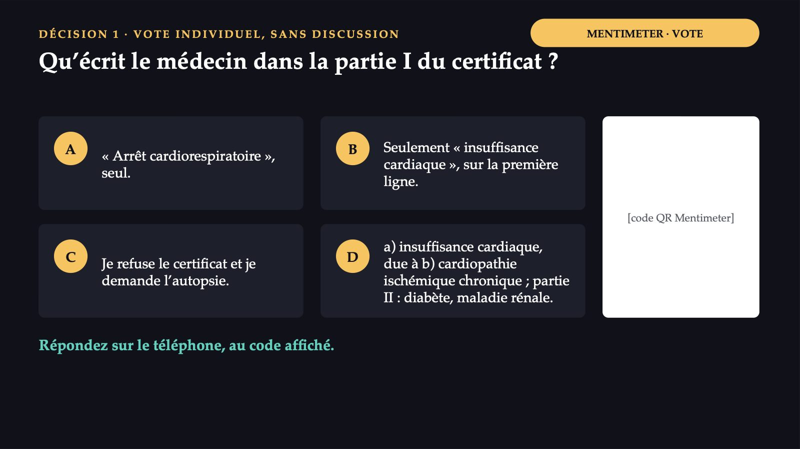
3 / 35Convainquez celui qui a voté autrement. Puis votez de nouveau.
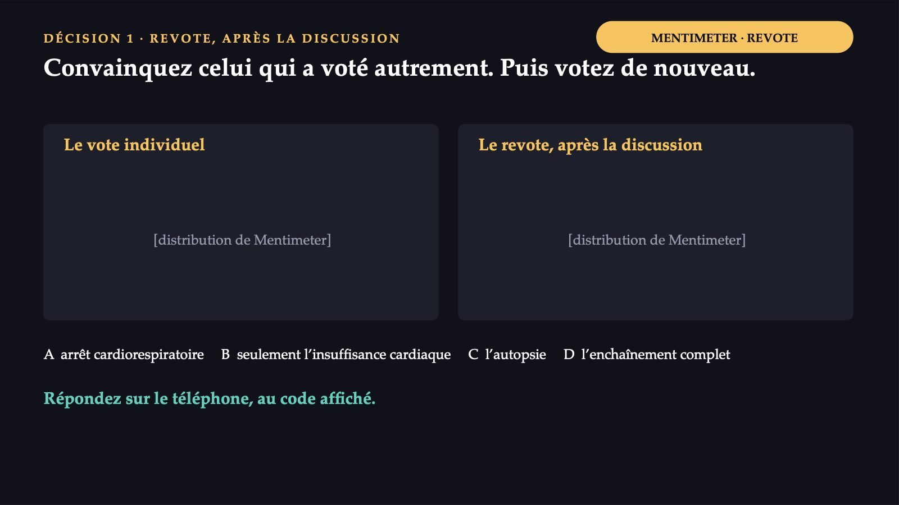
4 / 35Qui rédige le certificat, et dans quel délai
![LOI N° 119/1996 · ACTES DE L’ÉTAT CIVIL Qui rédige le certificat, et dans quel délai Qui Le médecin qui a fait la constatation. Il consigne la cause du décès et la date du décès. Dans quel délai Déclaration du décès : dans les 3 jours à compter de la date de la mort. Exception Suicide, accident, autres causes violentes, cadavre découvert : l’état civil exige aussi la preuve de la saisine de la police ou du parquet. Le certificat est le document médical que l’état civil transforme en acte de décès. Legea n° 119/1996 cu privire la actele de stare civilă (loi relative aux actes de l’état civil), forme consolidée.](diapozitive/LP04/005.jpg) 5 / 35
5 / 35Le contenu minimal et l’auteur du certificat de décès sont fixés par la loi en une seule phrase : le certificat médical de décès, dans lequel sont consignées la cause du décès et la date du décès, est établi et signé par le médecin qui a fait la constatation.
Partie I : un enchaînement. Partie II : ce qui a contribué.
![RÈGLES DE L’OMS · CIM-10, VOLUME 2 Partie I : un enchaînement. Partie II : ce qui a contribué. a) Cause terminale : la maladie inscrite en premier, sur la première ligne. b) due à ... c) Point de départ : sur la dernière ligne utilisée. C’est sur lui que se construit la cause initiale. Partie II : états qui ont contribué, sans être des maillons de l’enchaînement. Il se lit de haut en bas, avec « due à ». À côté de chaque maladie : l’intervalle approximatif entre le début et le décès, non depuis le diagnostic. Organisation mondiale de la santé, CIM-10, volume 2, manuel d’utilisation.](diapozitive/LP04/006.jpg) 6 / 35
6 / 35Le certificat du patient, correctement rempli
 7 / 35
7 / 35I46.9
![LE PIÈGE « Arrêt cardiorespiratoire » n’est pas une cause I46.9 → R99 causes non précisées Toute personne qui meurt présente, à la fin, l’arrêt du cœur et de la respiration : l’expression décrit la façon de mourir, non la maladie. « Not to be used for underlying-cause mortality coding. » (Ne pas utiliser pour le codage de la cause initiale de décès.) Sans autre cause déclarée, le décès est codé en R99. Le certificat répond à la question : quelle maladie a déclenché l’enchaînement qui a conduit à la mort ? OMS, CIM-10, volume 2 : l’arrêt cardiaque sans précision ne s’utilise pas pour le codage de la cause initiale.](diapozitive/LP04/008.jpg) 8 / 35
8 / 35Quatre options, quatre conséquences
 9 / 35
9 / 35Les formulaires types roumains
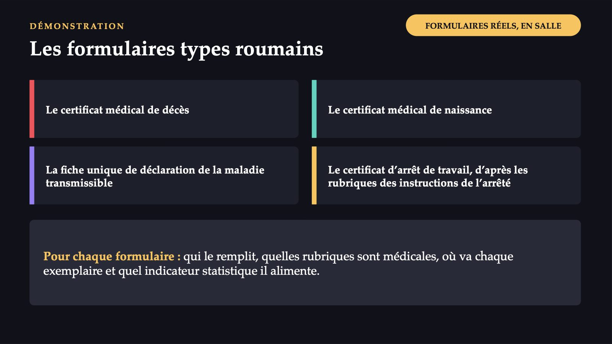
10 / 35Le certificat d’arrêt de travail
![LE DEUXIÈME DOCUMENT DU MATIN Le certificat d’arrêt de travail La fille, avec une pneumonie aiguë. Formulaire à régime spécial, qui constitue un ordre de paiement. Le type. Initial ou de prolongation : la prolongation continue un arrêt ininterrompu, pour la même affection. Le mois. Ne dépasse pas le mois en cours ; les jours du mois suivant, sur un nouveau certificat, de prolongation. Le diagnostic. Le code selon la CIM-10, avec la forme clinique : aiguë, subaiguë ou chronique. L’indemnité. Son code, en chiffres et en lettres, selon les spécifications du verso du certificat. Arrêté MS/CNAS n° 1192/745/2020, annexe n° 2 ; 3 exemplaires.](diapozitive/LP04/011.jpg) 11 / 35
11 / 3555 %
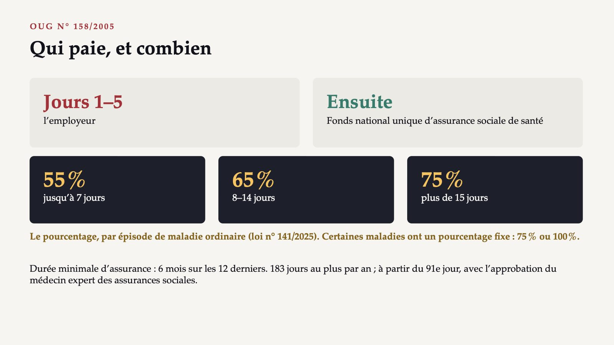
12 / 35Le certificat de décès et l’arrêt de travail de la fille
![FICHE DE TRAVAIL 4 · INDIVIDUEL, DANS FORMS ÉTAPES 1 ET 2 Le certificat de décès et l’arrêt de travail de la fille 1 Réécrivez la partie médicale du certificat portant « arrêt cardiorespiratoire » : l’enchaînement, les intervalles, la cause terminale, le point de départ. 2 Pneumonie aiguë, maladie ordinaire : 5 jours, puis 2 de plus, sans interruption, le même mois. Type de certificat, payeur, pourcentage. [code QR du formulaire] [lien court] Les rubriques du formulaire roumain : dans l’espace réservé, à partir des formulaires montrés en salle. Répondez sur le téléphone, au code affiché.](diapozitive/LP04/013.jpg) 13 / 35
13 / 3512,0 %
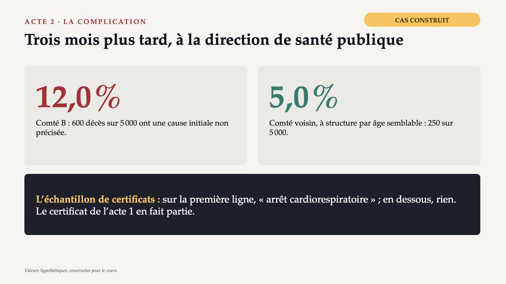
14 / 35Le chemin de la cause de décès
![DU FORMULAIRE À LA STATISTIQUE Le chemin de la cause de décès Le médecin rubrique médicale du certificat → L’état civil acte de décès → Bulletin statistique de décès transmis par voie électronique → INS mortalité par cause Une proportion élevée de symptômes et de signes « indicates a need to check or estimate the quality of the tabulated data ». Chaque décès classé en causes non précisées manque à la ligne de la maladie qui l’a provoqué : la mortalité cardiovasculaire du comté paraît plus faible qu’elle ne l’est. Legea n° 119/1996 (bulletins statistiques, INS) ; OMS, CIM-10, volume 2.](diapozitive/LP04/015.jpg) 15 / 35
15 / 35Des décisions et des conditions, pas des coupables
![CONFÉRENCE RMM · LA CHRONOLOGIE Des décisions et des conditions, pas des coupables Moment · Qui · Ce qu’il a vu · Ce qu’il a décidé Lundi, 07:40 · le médecin de famille · décès à domicile, la fille présente, sans violence · constate le décès À la délivrance du certificat · le médecin de famille · la famille attend ; le dossier est au cabinet · « arrêt cardiorespiratoire » ; le reste vide Dans le délai de 3 jours · la fille · le certificat signé et revêtu du cachet · déclare le décès Les semaines suivantes · l’état civil, le codage · une seule expression, non acceptée · bulletin à l’INS ; cause non précisée Trois mois plus tard · l’analyste de la DSP · 12,0 % contre 5,0 % · cherche le schéma Valeurs hypothétiques ; moments et rôles plausibles, non réels.](diapozitive/LP04/016.jpg) 16 / 35
16 / 35Le médecin de famille de l’acte 1 n’a pas enfreint la loi, qui demande seulement de consigner la cause ; il a rempli le formulaire comme le remplissent beaucoup de collègues, dans les conditions où il l’a rempli.
Pourquoi « arrêt cardiorespiratoire » s’est-il retrouvé sur le certificat ?
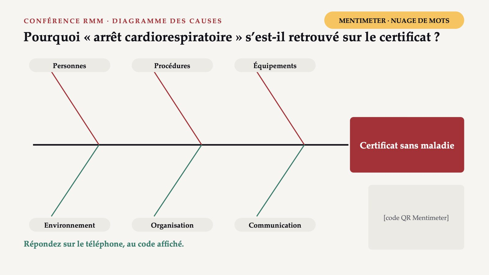
17 / 35Une seule cause : le médecin a écrit « arrêt cardiorespiratoire »
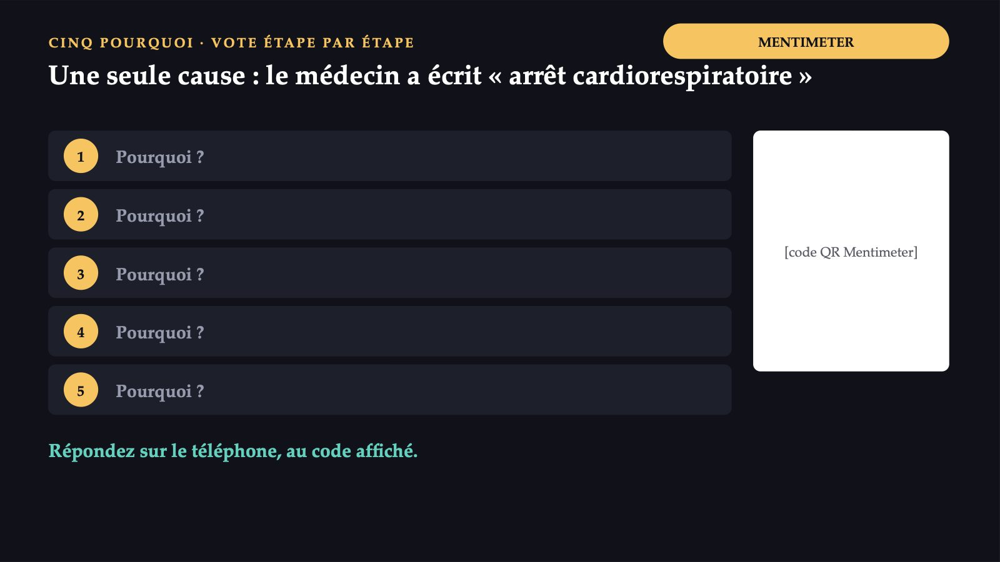
18 / 35Des causes sur les six branches
![LE DIAGRAMME COMPLÉTÉ Des causes sur les six branches Personnes: la formation à la certification des décès est courte ; beaucoup de médecins n’ont jamais vu un certificat corrigé. Procédures: personne ne vérifie, avant l’enregistrement, si la partie médicale contient une maladie. Équipements: le formulaire ne porte pas d’exemple d’enchaînement ; le dossier du patient n’est pas au domicile. Environnement: à la maison, le matin, avec la famille présente et le délai légal qui court. Organisation: les certificats de cause non précisée ne reviennent jamais au signataire. Communication: aucun canal entre ceux qui codent et ceux qui certifient.](diapozitive/LP04/019.jpg) 19 / 35
19 / 35Un circuit qui manque
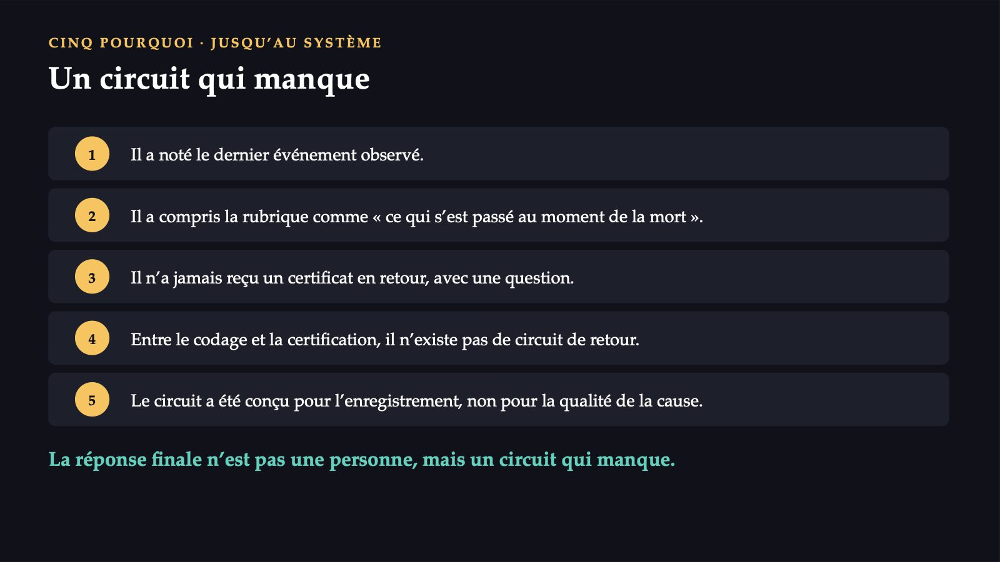
20 / 35Quelle mesure la direction de santé publique propose-t-elle ?
![DÉCISION 2 · VOTE INDIVIDUEL, SANS DISCUSSION MENTIMETER · VOTE Quelle mesure la direction de santé publique propose-t-elle ? A Une lettre aux médecins : « remplissez avec plus d’attention ». B Une liste déroulante de diagnostics dans le certificat électronique. C Chaque certificat de cause non précisée est renvoyé au signataire, avec une question écrite ; rapport trimestriel par établissement. D Des amendes pour les certificats incomplets. [code QR Mentimeter] Répondez sur le téléphone, au code affiché.](diapozitive/LP04/021.jpg) 21 / 35
21 / 35Convainquez celui qui a voté autrement. Puis votez de nouveau.
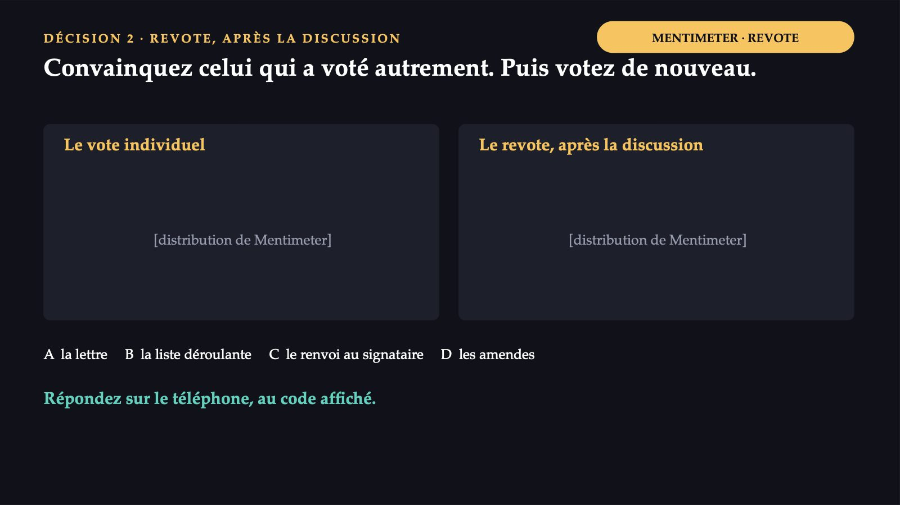
22 / 35La mesure de système : le circuit de retour
![DÉCISION 2 · COMMENT SE TRANCHENT LES OPTIONS La mesure de système : le circuit de retour A Ne change rien Les conditions du diagramme restent les mêmes. B Interdite par l’OMS « Automated systems must not include lists or other prompts to guide the certifier. » (pas de listes pour guider le médecin) C La mesure de système Le certificat revient au signataire, avec une question écrite ; les établissements reçoivent chaque trimestre leur proportion. D Sans fondement Pas de fondement dans les actes cités ; elles contredisent la culture sans blâme.](diapozitive/LP04/023.jpg) 23 / 35
23 / 3512,0 % → 5,0 %
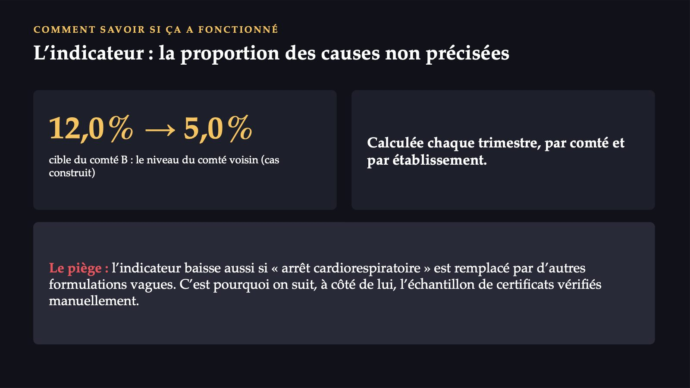
24 / 35Déclarer à la suspicion, non à la confirmation
![LE TROISIÈME FORMULAIRE · HG N° 657/2022 Déclarer à la suspicion, non à la confirmation La fiche unique: à la direction de santé publique, dans un délai maximal de 5 jours à compter du dépistage. Maladie marquée « (T) »: immédiatement, par téléphone ; puis la fiche, toujours dans un délai de 5 jours au plus. Les sanctions: avertissement écrit ; dans un délai d’un an, 500 à 1 000 lei ; ensuite 2 500 à 5 000 lei. Le registre: RUBT, administré par l’INSP ; les données personnelles sont confidentielles. Étape 3, dans le formulaire : le petit-fils, un enfant, cas suspect d’une maladie marquée « (T) ».](diapozitive/LP04/025.jpg) 25 / 35
25 / 3523
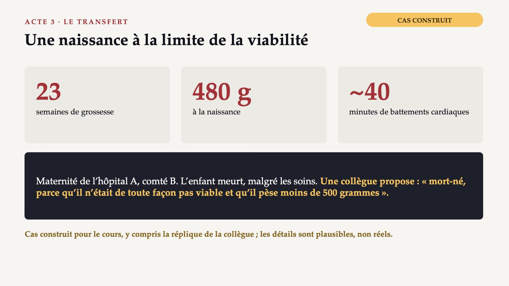
26 / 35Comment la naissance est-elle enregistrée ?
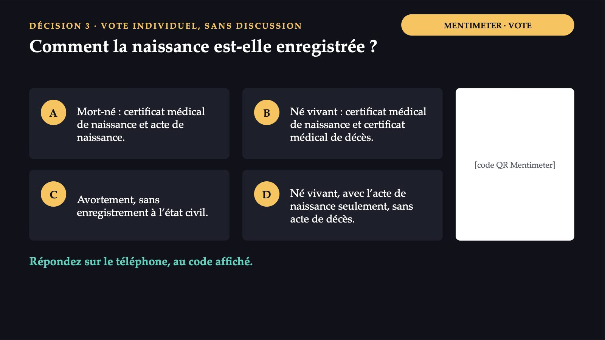
27 / 35Les signes de vie décident, non le poids
![DÉFINITION DE L’OMS ET LOI SUR L’ÉTAT CIVIL Les signes de vie décident, non le poids « irrespective of the duration of the pregnancy, which, after such separation, breathes or shows any other evidence of life » Né vivant Déclaration dans les 30 jours ; s’il meurt dans ce délai, dans les 24 heures suivant le décès. Mort-né Déclaration dans les 3 jours. Seul l’acte de naissance est dressé. Certificat de naissance Formulaire type : numéro d’enregistrement, date certaine, signature du médecin. OMS, CIM-10, volume 2 ; loi n° 119/1996 ; HG n° 255/2024.](diapozitive/LP04/028.jpg) 28 / 35
28 / 35L’enfant est né vivant
![DÉCISION 3 · COMMENT SE TRANCHENT LES OPTIONS L’enfant est né vivant A Faux « Mort-né » ne s’applique qu’à l’enfant sans aucun signe de vie. B Correct Certificat de naissance, puis certificat de décès ; l’acte de naissance avant l’acte de décès. C Contredit la définition Les battements du cœur sont un signe de vie, indépendamment de la durée de la grossesse. D Contredit la loi L’enfant né vivant qui meurt a aussi un acte de décès. Les seuils de 500 grammes et de 22 semaines délimitent la période périnatale, non la décision « vivant ou mort ».](diapozitive/LP04/029.jpg) 29 / 35
29 / 35Le même type de décès, des dénominateurs différents
![LES INDICATEURS · POUR 1 000 Le même type de décès, des dénominateurs différents Mortalité infantile décès avant 1 an ÷ nés vivants × 1 000 Mortalité périnatale (morts fœtales + décès néonatals précoces) ÷ (nés vivants + mort-nés) × 1 000 Néonatale: 28 premiers jours révolus ; néonatale précoce : 7 premiers jours. Post-néonatale: mortalité infantile moins mortalité néonatale. Période périnatale: de 22 semaines révolues (en général 500 g) à 7 jours après la naissance. Ordre des critères: poids, âge gestationnel, taille couronne-talons.](diapozitive/LP04/030.jpg) 30 / 35
30 / 35Les indicateurs du comté B
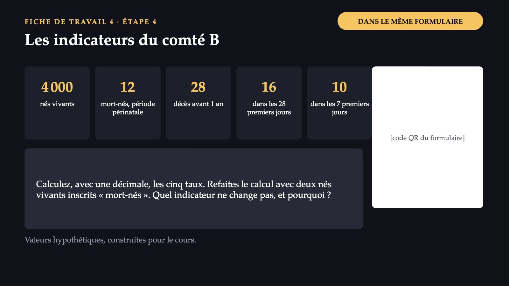
31 / 35Deux nés vivants inscrits « mort-nés »
![SI L’ERREUR SE RÉPÈTE · CAS CONSTRUIT Deux nés vivants inscrits « mort-nés » Pour 1 000 · Correct · Avec l’erreur Nés vivants · 4 000 · 3 998 Infantile · 7,0 · 6,5 Néonatale · 4,0 · 3,5 Néonatale précoce · 2,5 · 2,0 Périnatale · 5,5 · 5,5 L’infantile baisse sur le papier d’un demi-décès pour 1 000 ; aucun enfant n’a vécu plus longtemps. La périnatale reste la même : les deux erreurs restent dans son numérateur. Roumanie, 2024 : infantile 6,6 pour 1 000 enfants nés vivants ; UE : 3,5. Comté B : valeurs hypothétiques. Roumanie et UE : Eurostat.](diapozitive/LP04/032.jpg) 32 / 35
32 / 35La résolution s’affiche dans le formulaire de la fiche, une fois celle-ci remise.
La résolution s’affiche dans le formulaire de la fiche, une fois celle-ci remise.
Trois gestes, trois formulaires
![CE QUE VOUS FAITES AUTREMENT LUNDI MATIN Trois gestes, trois formulaires 1 Au premier certificat de décès : la maladie qui a déclenché l’enchaînement, sur la dernière ligne utilisée de la partie I ; jamais « arrêt cardiorespiratoire » seul. 2 Au premier enfant né avec des signes de vie, aussi petit soit-il : le certificat de naissance et, s’il meurt, le certificat de décès. 3 Au premier cas suspect d’une maladie à déclaration obligatoire : n’attendez pas le laboratoire. Chaque formulaire rempli aujourd’hui sera, un jour, un chiffre dans un tableau que quelqu’un d’autre utilise pour décider où vont l’argent et les personnes.](diapozitive/LP04/034.jpg) 34 / 35
34 / 35Trois questions pour finir
35 / 35Flèches ou espace : navigation · O : vue d’ensemble · N : notes de l’intervenant · F : plein écran · Échap : fermer